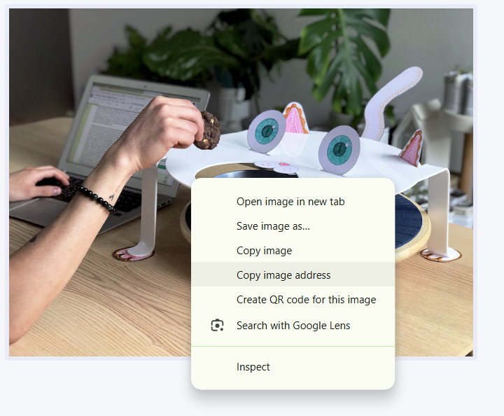

write everything in lower case. every elements is closed with/>

Instructors: Dr. Rohit Ashok Khot, Patrick McMahon Group 1: Every Wednesday
(04:30 pm - 07:30 pm) Our focus will be on building up from the basic
principles of programming, covering the standard web languages - HTML, CSS
and JavaScript, in order to be able to select and use appropriate
programming languages, together with core concepts of interaction design, in
service of your broader digital design goals. Course-Specific Learning
Outcomes: Upon completion of this course, you will have a comprehensive
understanding of the key concepts of interactivity, user experience design,
and information architecture in web-based environments. You will also be
able to identify and utilize the appropriate technologies to address
interactive design challenges. Furthermore, you will have the skills to
analyze user needs, organize information, and create effective navigation
strategies. Additionally, you will be proficient in controlling the visual
aspects of typography, color, and layouts through scripting languages and
coding, ensuring compatibility across multiple platforms. Lastly, you will
be able to critically evaluate web projects based on user-centered design
principles.